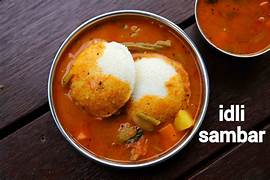

Home
Idli-Sambhar

Description
Idli Sambar is South India’s warm hug on a plate — soft, fluffy steamed rice cakes (idlis) paired with a hearty, tangy, and spiced lentil stew (sambar). The idlis, made from a fermented rice and urad dal batter, are cloud-like in texture, soaking up the sambar’s aromatic flavors with every bite. The sambar itself is a melody of toor dal, tamarind, vegetables like drumstick and carrots, and a spice blend tempered with mustard seeds, curry leaves, and dried red chilies. The result is a dish that’s light yet satisfying, gentle yet bursting with flavor — perfect for breakfast, brunch, or a soul-soothing dinner.
Beyond its irresistible taste, Idli Sambar is a powerhouse of nutrition. Idlis are naturally gluten-free, low in fat, and rich in complex carbohydrates, giving you sustained energy without heaviness. Sambar brings in plant-based protein from lentils, dietary fiber from vegetables, and antioxidants from fresh curry leaves and spices. It’s gut-friendly thanks to the fermentation in idlis, heart-friendly due to its low oil content, and immunity-supporting because of its vitamin and mineral profile. Whether you’re eating it with a dollop of coconut chutney or savoring it plain, every spoonful feels like both comfort food and health food rolled into one.
Ingredients:
For Idli
- idli rice – 2 cups (or parboiled rice)
- Urad dal (split black gram, skinned) – ½ cup
- Fenugreek seeds (methi) – ½ teaspoon
- Salt – to taste
- Water – as needed for soaking and grinding
For Sambhar
Lentil Base
- Toor dal (pigeon peas) – ½ cup
- Turmeric powder – ¼ teaspoon
- Salt – to taste
Vegetables (use a mix, adjust to taste)
- Drumsticks (moringa pods) – 2, cut into 2-inch pieces
- Carrots – 1 medium, diced
- Brinjal (eggplant) – 1 small, cubed
- Okra (ladyfinger) – 4–5 pieces, cut into halves
- Tomato – 1 medium, chopped
- Small onions (shallots) – 6–8, peeled
Sambar Flavoring
- Tamarind – lemon-sized ball, soaked in warm water & extract juice
- Sambar powder – 2 tablespoons (homemade or store-bought)
- Jaggery – 1 teaspoon (optional, to balance tanginess)
Tempering (Tadka)
- Oil or ghee – 1½ tablespoons
- Mustard seeds – ½ teaspoon
- Curry leaves – 10–12 fresh leaves
- Dried red chilies – 2, broken in halves
- Asafoetida (hing) – a pinch
Recipe:
Making idli batter
- Soak the rice & dal
- Rinse 2 cups idli rice 3–4 times until the water runs clear. Soak in plenty of water for 6 hours.
- Rinse ½ cup urad dal and ½ tsp fenugreek seeds together, soak for 4 hours.
- Grind to a smooth batter
- Drain the urad dal and grind with a little water to a fluffy, smooth paste.
- Drain the rice and grind separately to a slightly coarse batter.
Combine both, add salt, and mix well.
- Ferment
- eave the batter in a warm spot for 8–12 hours until it doubles and looks airy.
- Steam Idlis
- Grease idli moulds lightly with oil.
- Pour batter into moulds and steam in an idli steamer or large pot with water for 10–12 minutes on medium heat.
Part 2 — Making Sambar
- Cook the lentils
- Rinse ½ cup toor dal well.
Pressure cook with ¼ tsp turmeric and 1½ cups water for 3–4 whistles (or until mushy).
- Mash and set aside.
- Cook vegetables
- In a pot, boil drumsticks, carrots, brinjal, okra, tomatoes, and shallots until just tender.
- Add tamarind & spices
- Add tamarind water (from soaking tamarind) to the vegetables.
Stir in 2 tbsp sambar powder and salt to taste.
- Simmer for 8–10 minutes.
- Add lentils & jaggery
- Add the mashed toor dal to the vegetable-tamarind mixture
- Stir in 1 tsp jaggery (optional) and simmer for another 5 minutes.
Part 3 — Tempering (Tadka)
- Prepare the tadka
- Heat 1½ tbsp oil/ghee in a small pan.
Add ½ tsp mustard seeds — let them crackle.
- Add 2 dried red chilies, 10–12 curry leaves, and a pinch of asafoetida.
Pour this over the sambar and mix well.
Part 4 — Serving
- Serve hot
- Place fluffy idlis on a plate, pour hot sambar into a bowl, and serve with coconut chutney on the side.
- Best enjoyed fresh, when idlis are warm and sambar is fragrant.